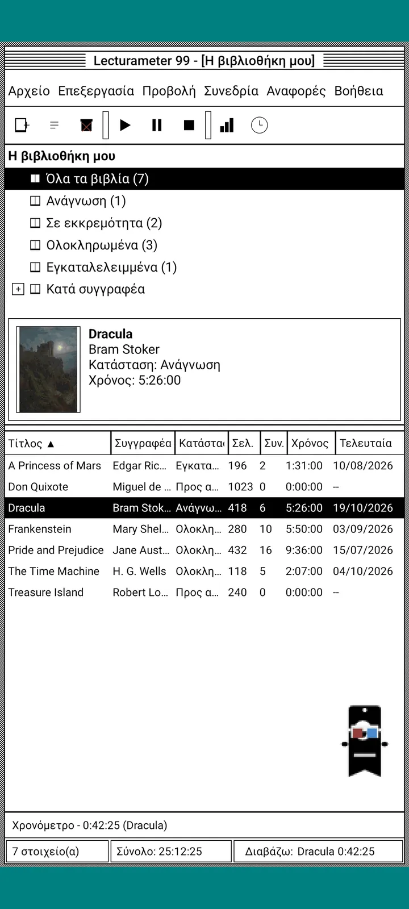
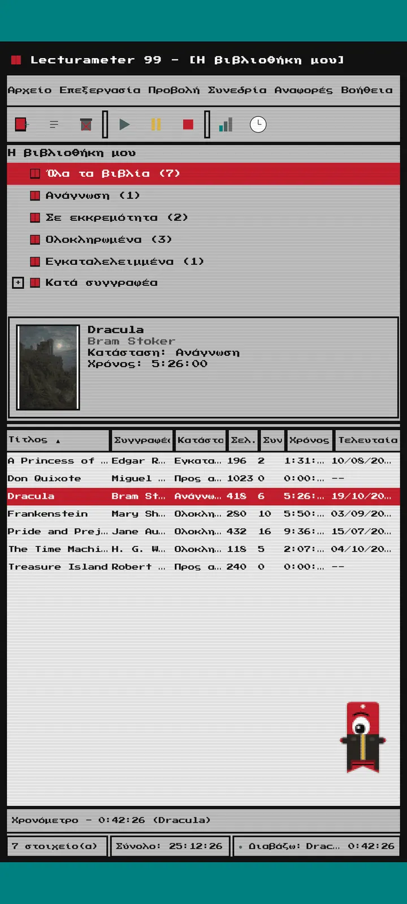
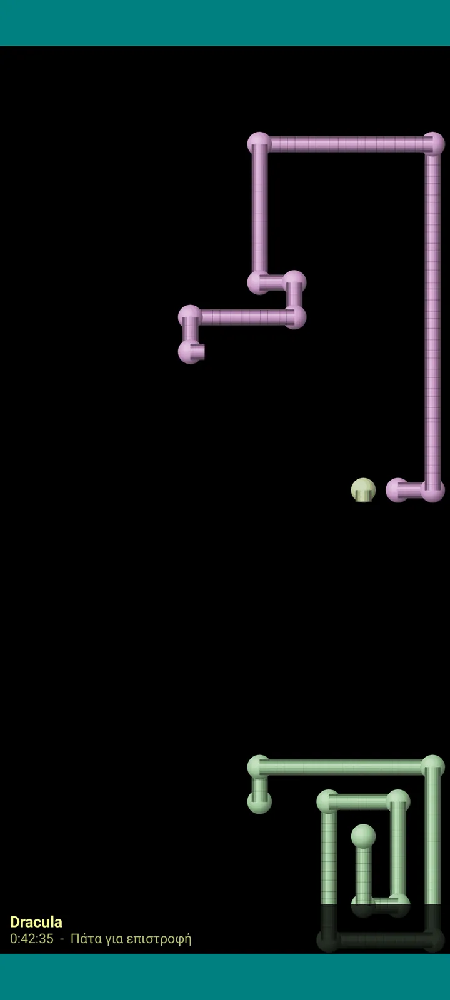

Lecturameter 1999
Το Lecturameter σαν να το είχες εγκαταστήσει από CD-ROM το 1999. Ένα εναλλακτικό πρόγραμμα-πελάτης της εφαρμογής, με παράθυρα, μενού και πίνακες, που ανοίγει τα πραγματικά σου αντίγραφα ασφαλείας.

Τι είναι
Ένα πρόγραμμα υπολογιστή του τέλους της δεκαετίας του ενενήντα που τρέχει στο κινητό σου. Ένα παράθυρο πάνω σε γαλαζοπράσινη επιφάνεια εργασίας, γραμμή μενού, γραμμή εργαλείων, δέντρο φακέλων, πυκνός πίνακας και γραμμή κατάστασης.
- Δέντρο βιβλιοθήκης: όλα τα βιβλία, ανάγνωση, σε εκκρεμότητα, ολοκληρωμένα, εγκαταλελειμμένα και ανά συγγραφέα
- Πίνακας με τίτλο, συγγραφέα, κατάσταση, σελίδες, συνεδρίες, χρόνο και τελευταία ανάγνωση. Πάτησε μια κεφαλίδα στήλης για ταξινόμηση
- Πραγματική αναζήτηση βιβλίων, με τον ίδιο κατάλογο που χρησιμοποιεί το Lecturameter
- Εισάγει και εξάγει το αντίγραφο ασφαλείας του Lecturameter και το CSV του Goodreads. Τα δεδομένα σου μπαίνουν και βγαίνουν χωρίς να χάνεται τίποτα

Γιατί υπάρχει
Ένα πείραμα: να ξαναχτιστεί η ιδέα του Lecturameter από το μηδέν με ριζικά διαφορετικές σχεδιαστικές αρχές, χωρίς να αγγίξω την πραγματική εφαρμογή. Από όλες τις επανερμηνείες, αυτή του 1999 ήταν αυτή που μου άρεσε περισσότερο, οπότε την ολοκλήρωσα ως διασκεδαστική άσκηση και την έκανα πλήρες πρόγραμμα-πελάτη. Είναι σκόπιμα πιο απλό από το Lecturameter: είναι πείραμα και, κατ' αρχήν, δεν θα αναπτυχθεί περαιτέρω.
- Χρονόμετρο σε αιωρούμενο παράθυρο με πράσινη οθόνη LCD. Μετακινείται, ελαχιστοποιείται σε γραμμή εργασιών και συνεχίζει να μετράει στη γραμμή κατάστασης
- Όταν σταματάς, ο διάλογος αποθήκευσης συνεδρίας σού ζητά τις σελίδες και υπολογίζει τον ρυθμό σου, όπως ακριβώς στο Lecturameter
- Οι αποθηκευμένες συνεδρίες είναι συνεδρίες του Lecturameter: επιστρέφουν στη σύγχρονη εφαρμογή αν εξαγάγεις ένα αντίγραφο ασφαλείας του Lecturameter 1999 και το εισαγάγεις στο Lecturameter.

Αναφορά ανάγνωσης
Τα στατιστικά είναι μια τυπωμένη αναφορά: σύνοψη, χρόνος ανά βιβλίο με μπάρες από τετράγωνα, ταχύτητα σε σελίδες ανά ημέρα, ημερολόγιο της χρονιάς σχεδιασμένο με χαρακτήρες και οι τελευταίες επτά ημέρες.

Ιστορικό συνεδριών
Συνεδρίες ομαδοποιημένες ανά βιβλίο σε δέντρο με συν και πλην, με πέντε αριθμούς στην κορυφή: συνεδρίες, συνολικός χρόνος, σελίδες, σελίδες ανά λεπτό και σελίδες ανά ημέρα.

Αποθήκευση συνεδρίας
Ημερομηνία, λεπτά, πρώτη και τελευταία σελίδα, σχόλιο. Η σύνοψη υπολογίζει σελίδες και ρυθμό όσο πληκτρολογείς. Αν φτάσεις στην τελευταία σελίδα, σε ρωτά αν τελείωσες το βιβλίο.

Pagi 99
Ο Pagi ταξιδεύει κι αυτός στο 1999: σε pixel και ελεύθερος στην οθόνη, σαν τους βοηθούς γραφείου της εποχής. Μπορείς να τον σύρεις, λέει μια ατάκα όταν τον πατάς και δείχνει συμβουλές σε κίτρινα συννεφάκια.
Θέματα
Το Κλασικό 98 είναι δωρεάν και το προεπιλεγμένο. Το πακέτο προσθέτει άλλα έξι, το καθένα με το δικό του φόντο και τους δικούς του ήχους.

Το διαλέγεις από το μενού Προβολή
Το Προβολή, Θέμα... ανοίγει ένα παράθυρο με τα επτά θέματα. Η αλλαγή φτάνει αμέσως σε όλα τα παράθυρα, στο χρονόμετρο και στον Pagi.
- Κλασικό 98, δωρεάν και προεπιλεγμένο: γκρι παράθυρα, σκούρες μπλε γραμμές τίτλου και γαλαζοπράσινη επιφάνεια εργασίας
- Πακέτο θεμάτων: 1984, Ζελεδάκι, Μνήμη, Πύργοι, Πυρήνας και 8-bit
- Κάθε θέμα φέρνει το δικό του φόντο επιφάνειας εργασίας και τους δικούς του ήχους για τα πατήματα, τα παράθυρα και το χρονόμετρο
- Το Προβολή, Ήχοι θέματος απενεργοποιεί τους ήχους αν διαβάζεις στη σιωπή

Κλασικό 98
Γκρι παράθυρα, σκούρες μπλε γραμμές τίτλου και γαλαζοπράσινη επιφάνεια εργασίας. Δωρεάν, είναι αυτό με το οποίο ανοίγει η εφαρμογή.

1984
Ασπρόμαυρη επιφάνεια εργασίας ενός bit, με μοτίβα από κουκκίδες και τετράγωνα παράθυρα.

Ζελεδάκι
Ημιδιάφανο χρωματιστό πλαστικό, στρογγυλεμένα κουμπιά και ρίγες στο φόντο.

Μνήμη
Τα μενού μιας κονσόλας δίσκων της δεκαετίας του ενενήντα, σε σκούρα μπλε.

Πύργοι
Μια ακόμα κονσόλα δίσκων της δεκαετίας του ενενήντα, μπλε της νύχτας με γαλάζιες γραμμές.

Πυρήνας
Μαυροπράσινη κονσόλα, σαν οθόνη που δεν σβήνει ποτέ.

8-bit
Χοντρά pixel, λίγα χρώματα και τετραγωνισμένα γράμματα.

Δοκίμασέ το πριν πληρώσεις
Πατάς ένα κλειδωμένο θέμα και όλη η εφαρμογή αλλάζει σε αυτό. Αν κλείσεις χωρίς να αγοράσεις, επιστρέφει το προηγούμενο θέμα.
Προφύλαξη οθόνης
Εμφανίζονται μόνο όσο τρέχει το χρονόμετρο και αφήνεις το κινητό ήσυχο. Περιμένουν 1, 3 ή 5 λεπτά, ή ποτέ. Ένα πάτημα και επιστρέφεις, και το χρονόμετρο συνεχίζει να μετράει.

Ιπτάμενα βιβλία
Βιβλία από pixel που πετούν χτυπώντας τα εξώφυλλά τους σε μαύρη οθόνη.

Πεδίο γραμμάτων
Γράμματα από πολλά αλφάβητα που περνούν αργά, σαν πεδίο με αστέρια.

Σωλήνες σελίδων
Σωλήνες φτιαγμένοι από σελίδες που σχεδιάζονται μόνοι τους μέχρι να γεμίσει η οθόνη.

Ο Pagi αναπηδά
Ο Pagi αναπηδά στις άκρες της οθόνης.

Ρολόι ανάγνωσης
Ο χρόνος της συνεδρίας με μεγάλα ψηφία LCD.

Στολές για τον Pagi
Οκτώ στολές για τον Pagi 99. Τις διαλέγεις από Προβολή, Στολή του Pagi..., και μπορείς να τις δοκιμάσεις πριν πληρώσεις.
- Κασετόφωνο
- Καπέλο ανάποδα
- Γυαλιά 3D
- Γυαλιά ηλίου νέον
- Δισκέτα στο χέρι
- Δερμάτινο μπουφάν
- Κατοικίδιο τσέπης
- Χάρτινη κορόνα
Κατάστημα
Η εφαρμογή είναι δωρεάν και πλήρης για να καταγράφεις την ανάγνωσή σου. Ό,τι αγοράζεις αλλάζει μόνο την εμφάνισή της.
Ολόκληρη η εφαρμογή, χωρίς χρονικό όριο.
- Βιβλιοθήκη, αναζήτηση, χρονόμετρο και συνεδρίες
- Αναφορά ανάγνωσης και ιστορικό συνεδριών
- Αντίγραφο ασφαλείας του Lecturameter και CSV του Goodreads, εισαγωγή και εξαγωγή
- Θέμα Κλασικό 98 και Pagi 99
- Χωρίς λογαριασμό και χωρίς διαφημίσεις
Εφάπαξ πληρωμές, χωρίς συνδρομές.
- Πακέτο θεμάτων, €3.49: 6 θέματα με φόντο και ήχους, συν τις προφυλάξεις οθόνης
- Προφυλάξεις οθόνης, €1.99: οι 5 προφυλάξεις οθόνης
- Στολές του Pagi, €1.99: οι 8 στολές
- Όλο το 1999, €4.49: θέματα, προφυλάξεις οθόνης και στολές
Προαιρετικά φιλοδωρήματα στο μενού Βοήθεια, αν θέλεις να με κεράσεις έναν καφέ.
Τα θέματα και οι στολές δοκιμάζονται ζωντανά πριν πληρώσεις. Αν κλείσεις χωρίς να αγοράσεις, επιστρέφει ό,τι είχες.
Τι αλλάζει σε σχέση με το Lecturameter
Ίδιο με το Lecturameter
- Ίδια δεδομένα: βιβλία, συνεδρίες, καταστάσεις, βαθμολογίες και σημειώσεις. Το αρχείο αντιγράφου ασφαλείας είναι το ίδιο και στις δύο εφαρμογές.
- Αναζήτηση βιβλίων με τίτλο ή συγγραφέα.
- Πραγματικό χρονόμετρο: συνεχίζει να μετράει στο παρασκήνιο, ακόμα κι αν κλείσεις την εφαρμογή.
- Χωρίς λογαριασμό, χωρίς διαφημίσεις, χωρίς σύνδεση εκτός από την αναζήτηση βιβλίων.
- Οι ίδιες γλώσσες με το Lecturameter.
Μόνο στην έκδοση 1999
- Περιβάλλον υπολογιστή του 1999. Καθόλου Material.
- Αληθινά παράθυρα: τα σέρνεις, τα ελαχιστοποιείς και τα κλείνεις με το Χ.
- Αναφορά ανάγνωσης σε κείμενο, με ημερολόγιο σχεδιασμένο με χαρακτήρες.
- Μενού περιβάλλοντος με παρατεταμένο πάτημα και συντομεύσεις πληκτρολογίου αν συνδέσεις πληκτρολόγιο.
- Ο Pagi 99 σε pixel με συννεφάκια συμβουλών.
- Προαιρετικά θέματα με δικό τους φόντο και ήχους, προφυλάξεις οθόνης όσο τρέχει το χρονόμετρο και στολές για τον Pagi.
Τι αφήνει έξω, σκόπιμα
- Χωρίς Pro και χωρίς συνδρομή. Η καταγραφή της ανάγνωσής σου είναι όλη δωρεάν, το κατάστημα πουλάει μόνο εμφάνιση.
- Χωρίς προκλήσεις, Bingo, ετήσιο Wrapped ή widgets.
- Χωρίς καθηλωτική συνεδρία, ήχους περιβάλλοντος ή αντίγραφο ασφαλείας στο Google Drive. Το αντίγραφο αποθηκεύεται ως αρχείο.
Κλειστή δοκιμή
Το Lecturameter 1999 είναι σε κλειστή δοκιμή στο Google Play. Το iOS θα έρθει αργότερα, χωρίς ημερομηνία ακόμα.
- Γίνε μέλος της ομάδας groups.google.com/g/lecturameter-1999
- Γράψου ως δοκιμαστής στο play.google.com/apps/testing/com.lecturameter.r1999
- Εγκατάστησέ το από Google Play
Σε κλειστή δοκιμή στο Google Play, το iOS αργότερα. Διάβασε την ανάρτηση στο ιστολόγιο για να δεις από πού προέρχεται και τι να περιμένεις.